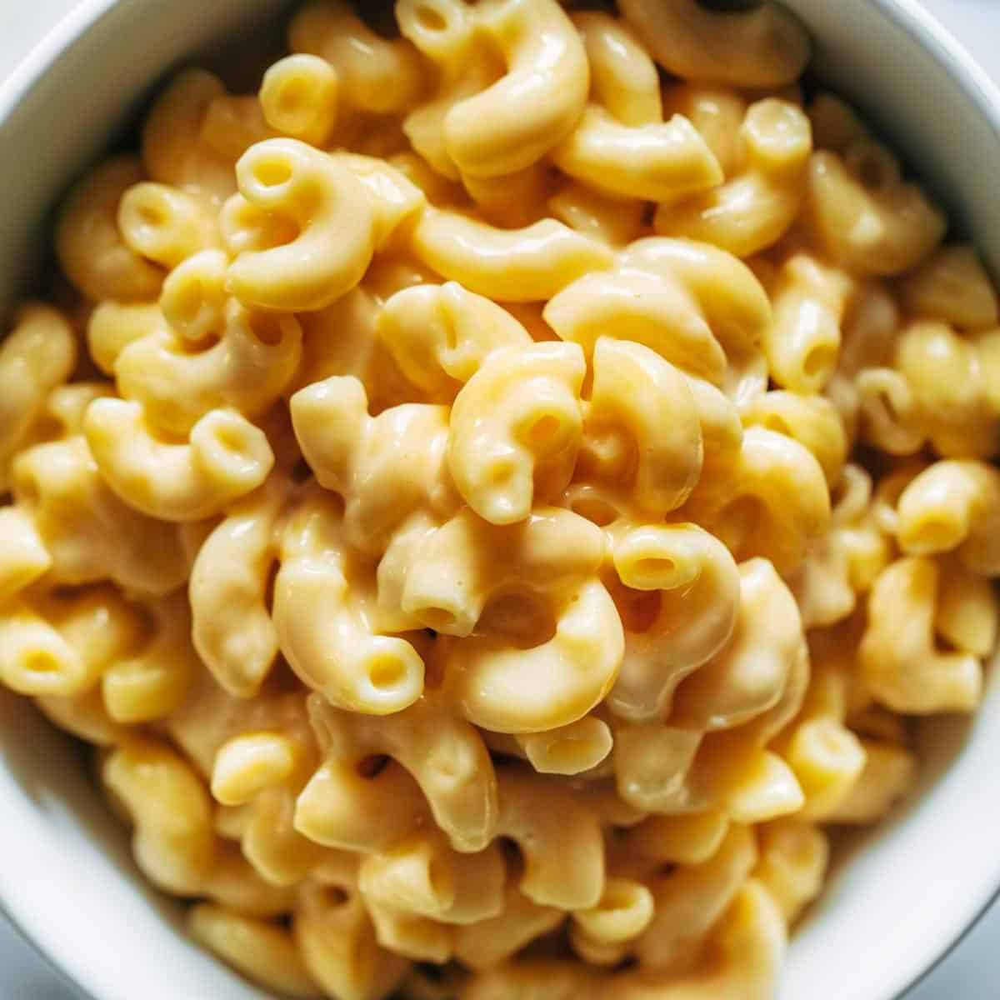

Mac-n-Cheese

Description
Our Test Kitchen has created dozens and dozens of recipes for
macaroni and cheese over the years and this is one of our favorite
versions yet. The secret is three kinds of cheese (Cheddar, Velveeta,
and whole-milk ricotta) and a generous amount of mayonnaise, which
gives it a creamy texture and a slight tanginess. Then, the pasta is
topped off with buttery breadcrumbs and baked in a skillet for an
ooey, gooey texture and slightly crisp edges. Even though you'll be
tempted to grab a spoon as soon as it leaves the oven, be sure to let
the mac and cheese stand for five to 10 minutes so it can cool to the
perfect temperature.
Ingredients
- 3/4 cup chopped yellow onion (from 1 onion)
- 3 tablespoons all-purpose flour
- 1 tablespoon finely chopped garlic (2 to 3 garlic cloves)
- 2 cups whole milk
- 8 ounces sharp Cheddar cheese, shredded (about 2 cups)
- 6 ounces processed cheese (such as Velveeta), cubed (about
1 1/2 cups)
- 1 cup mayonnaise (such as Duke's)
- 1/2 teaspoon kosher salt
- 6 tablespoons coarsely chopped fresh flat-leaf parsley,
divided
- 3/4 cup whole-milk ricotta cheese
- 1 large egg
- 1 1/2 cups panko (Japanese-style breadcrumbs)
- 2 tablespoons salted butter, melted
Steps
- Prepare pasta according to package directions; set aside.
Preheat oven to 350°F.
- Melt butter in a 12-inch cast-iron skillet over medium-high.
Add onion, and cook, stirring, until just beginning to brown,
4 to 5 minutes. Add flour and garlic to skillet; cook, stirring,
until fragrant, 1 to 2 minutes. Add milk; bring to a boil. Reduce
heat to low. Gradually add Cheddar and processed cheese, whisking
until melted. Remove from heat. Stir in cooked pasta, mayonnaise,
salt, and 1/2 cup of the parsley
- Stir together ricotta and egg in a small bowl. Gently stir
ricotta mixture into pasta mixture, leaving large swirls. Bake
in preheated oven 10 minutes.
- Meanwhile, stir together panko, melted butter, and remaining 2
tablespoons parsley until blended. Top pasta with panko mixture,
and bake until top is lightly browned, about 10 minutes.